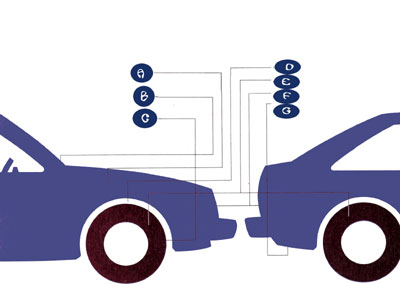
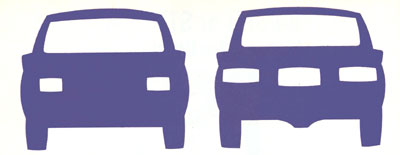

Do-it-yourself auto maintenance can prevent vacation breakdowns.
With summer just around the corner, it won't be long before millions of Americans take to the highways in celebration of their annual vacations. Unfortunately, many of those travelers won't reach their destinations w ithout suffering a mechanical mishap along the way.
A roadside breakdown is no joke, and you'll only be kidding yourself if you leave your fate to chance. By spending a Saturday afternoon checking commonly ignored components on your car, you'll be one up when you take those jaunts-or that special journey-you've been looking forward to all year.
These preventive maintenance steps don't have to cost a cent. Nor will they require a shopful of tools or the expertise of a seasoned mechanic. In fact, each procedure outlined below is one you can do yourself, even if all you know about cars is how to lift the hood or change a tire. A few essential tools will come in handy: adjustable channel-locking pliers, flat- and Phillips-blade screwdrivers, a utility knife and perhaps a seven-piece set of combination or socket wrenches (3/8" through 3/4" or 9mm through 19mm, metric). If you don't own any tools, consider buying some to keep in the car. You just might need them on the road someday.
It seems sensible to begin by opening the vehicle's hood . . . but it makes even more sense to start by opening your owner's manual to the section on service and scheduled maintenance. There the manufacturer item izes service procedures by mileage intervals and indicates fluid capacities, oil and coolant requirements and a number of other things specific to your car. The manual often includes photos or illustrations that locate and detail each maintenance chore clearly.
Once you've familiarized yourself, at least in theory, with the things that might need attention under the hood, it's time to make your move. Don't count on keeping your clothes clean; just wear something that can get stained. Remove any watches or metal jewelry that can conduct electricity, and dispense with belts or buckles that might scratch your car's finish. Tie up your hair (or wear a hat) if it's long enough to snag.
B-WIPERS: Replace the blades if they're worn, and fill the reservoir.
C-BRAKES: Look for leaks or kinks in the brake lines; scraping or clinking noises should be checked.
D-SHOCKS: Worn shock absorbers cause your car to wallow and bounce. Look for a service center sale.
E-TIRES: Tread wear can tell a story if you know what to look for. If the rubber is in good shape, inflate the tires to the recommended pressure.
F-LIGHTS: It only takes a few moments to check headlights, taillights, etc.
G-EXHAUST: Get under the car and look for corrosion or looseness in the pipe, muffler or clamp components.
Safety first? It's a good practice, so let's start there. Turn on the headlights, and walk around the car to check each bulb. Test the high beams and brake lights (with the help of a friend). Try the turn signals and parking/side marker lights, too. If a lamp is burned out, be sure to replace it with one of the same type. To change a headlight on most cars, first remove the trim door around it; then loosen the lamp mounting screws, pull the bulb plug and put in the new unit. Don't turn the longer headlight alignment screws, or you'll need to re-aim the headlights. The taillights are usually accessed through removable panels in the trunk in modern cars. On older models, the lenses unscrew from the outside.
Inspect the wiper blades for splits and deterioration. Replace them (by pinching the end clips together and sliding the flat spine through the four sets of hooked guides) if they're at all questionable. On some cars, you may need to change the blade and its holder by pressing the clip or button located at the end of the wiper arm. Now's also the time to fill up the washer reservoir with the recommended fluid and test the system.
Determine what type of fuses or breakers your electrical system uses by referring to the owner's manual or checking the fuse box beneath the driver's dashboard or on the inside or outside fire wall panel. Purchase spare fuses to match the three or four amperage ratings required. Check, as well, the operation of your fuel gauge. If it's broken or erratic, have it repaired before you travel.
Warm weather won't guarantee a troublefree battery. Time, corrosion and poor maintenance take their toll in any season. If there are deposits on the terminal posts and at the top of the battery, wash the areas with a solution of two tablespoons baking soda to one quart water. Is the corrosion well entrenched? Loosen the cable clamps, remove them from the posts with a cable puller or channel pliers, then clean the posts and the inside of the clamps with a small wire brush or a terminal tool. Don't hammer the clamps in place when you reattach them, or you may ruin the battery. If the cables have deteriorated and the wiring is exposed, replace them. Check, too, the cable connections at the engine block (or chassis) and at the starter solenoid. They should both be tight and free of dirt. Coat the posts and clamps with gasket sealer or petroleum jelly to inhibit future corrosion.
Remove the filler caps at the top of the battery, and add enough distilled water to cover the cell plates if they're exposed. Inspect the battery hold-down clamps; tighten or replace them if necessary.
While you're at it, take a look at the alternator drive belt. The outer face may appear fine, but twist it slightly to check the tapered sides. A healthy belt shouldn't be cracked, shiny-smooth or flecked with oil stains. If you must replace or tighten the belt, don't put excessive pressure on the alternator housing, or you may distort it; draw it firmly against the belt so there's about 1/2" up-and-down deflection on the longest stretch.
The air filter is one of the least expensive parts on your car, yet one of the most ig nored. On a conventional carbureted engine, it's located in the round housing above the rest of the motor; fuel-injected models may house it in a chamber off to one side. Replace the element if it's been on the car for more than 24,000 miles (sooner, if you drive under dusty conditions frequently). A good test is to shine a light through the ribbed section from behind. It'll be visible if the filter is OK. Check the gasket between the filter housing and the carburetor, and the condition of the corrugated hot air duct, as well.
DRIVE TRAIN: Worn universal or constant-velocity joints can pose a hazard. Check for excessive play in the drive shaft. More than a fraction of an inch is too much.
In-line fuel filters should also receive attention if they're old. The kind threaded to the carburetor should be removed with two wrenches, one to hold the carb nut and one to unscrew the filter. You can pull canister types from the line after you've loosened the hose clamps. Be sure to look for a direction-of-flow arrow when you install the new filter. (Fuel-injected engines have pressurized fuel systems, so it's best to leave their filters to a professional.)
The positive crankcase ventilation (PCV) valve-located within a rubber grommet on the air cleaner housing, valve cover, intake manifold or oil filler cap-should rattle freely when shaken. If it doesn't, replace it and the small breather filter inside the housing or cap. Both parts simply press into place. In the process, you can inspect the neoprene ventilation hoses for kinks or tears.
The biggest favor you can do your vehicle before a long trip is to change its oil and filter. Use a box or socket wrench to remove the crankcase plug in the oil pan, and let the old oil drain into a leak-free container. Unscrew the filter (you may need a strap wrench), and let it drain there as well. Coat the new filter's rubber seal with clean oil, then tighten the canister in place on the block using hand pressure only. Replace the oil pan plug (don't overtighten it), and fill the crankcase to the capacity specified in the owner's manual.
Change the oil and filter; your car will almost smile.
Automatic transmissions use a high-detergent lubricant specified by the manufacturer. Usually, the level is checked when the car is idling and has reached initial operating temperature. After setting the parking brake, move the shift lever slowly through all the gear positions, then back into park. Allow one more minute of idling, then read the dipstick's "cold" side, if that's indicated. Add fluid, if necessary, through the dipstick tube until it reads correctly on the stick. Don't overfill or underfill: Doing so will affect the transmission's performance.
The power steering system uses automatic transmission fluid as well. Merely fill the reservoir if the cap stick shows the level at "add." Keep the fluid level below the cold mark if you check it cold; any extra fluid will just spew out when the engine heats up.
Brake fluid must meet the Department of Transportation standards indicated in the owner's manual. Check the reservoir at the master cylinder located on the engine compartment fire wall, and fill it to within 1/2" of the top if needed. Be careful not to spill any fluid on finished surfaces, because it removes paint instantly.
Unless you have the tools and experience to check the differential and manual transmission fluid levels, it's easier to let a mechanic do those jobs. But don't just ignore these components, because they can leak and are very costly to replace.
Overheated engines stop more summertime progress than anything except flat tires; check your cooling system. For starters, squeeze the radiator hoses. If they're unusually stiff, they've probably been overheated. Soft and gooey? Oil contamination. Or perhaps they've been physically damaged by tight clamps or contact with a sharp corner. Replace them-along with heater hoses, choke warming lines and bypass elbows that show similar characteristics. Be certain to clean all fittings thoroughly before installing the new hoses, and always use new wormdrive clamps rather than trying to reuse the old ones.
Now inspect the fan and water pump belt, using the same criteria as those used for the alternator drive. Should you need to replace the belt, test the water pump bearings by grasping the fan blades or pump shaft and shaking the assembly up and down while the belt is off. If you can detect lateral movement of the shaft, the water pump may need to be replaced, too. (Some cars have electrically driven radiator fans, so disconnect their terminals while testing, and concentrate on the pump shaft alone.)
Antifreeze no longer has that single wintertime function. It's now generally called coolant, and its concentration can be critical to pump lubrication and warm-weather driving. If it's been two or more years since you changed the coolant or the thermostat, consider taking your car to a service station for a back-flush, thermostat change and refill. Flushing kits are available to fit your garden hose if you want to tackle the job yourself. Otherwise, do without the cleaning, and at least top of the radiator (or partially fill the small recovery reservoir on newer cars) with a 50:50 mixture of coolant and water.
To drain the cooling system, bring the engine to operating temperature, then open the petcock at the bottom of the radiator or just remove the lower hose. Refill it with a half-and-half blend, or refer to the chart on the coolant container; it specifies the best mixture for your expected temperatures. Run the engine while refilling the system, and turn the heater on full to make sure the core fills properly. Finally, inspect the radiator cap for deterioration or leakage if it's the removable type, and clean the radiator fins of bugs, leaves and other road debris.
Modern cars equipped with electronic ignition go farther between tune-ups and require fewer replacement parts than older vehicles. But spark plugs and rotors do wear out eventually, so you may want to check these parts if you can't remember when they were last serviced. Carefully remove one cable boot from a spark plug, and unscrew the plug with a socket or plug wrench. (If you can't reach any easily, defer to a professional.) Check the ignition end of the plug for burned electrode tips, dark deposits or wetness. If any of these are present, you'll need to spring for a tune-up or diagnosis.
Next, remove the clips or screws from the plastic cap that holds the ignition cables. Lift the cap to look at its underside and the metaltipped rotor beneath it. If there's any sign of arcing or burning, get these parts replaced.
Unless you're comfortable doing tune-ups on conventional and electronic ignition systems, it's best to leave that work to a mechanic. Breaker-point systems require detailed adjustments, and electronic ignition parts can demand special handling.
Even though it requires a trained technician to service AC systems, you can make some basic checks yourself. Examine the belt for tightness and signs of wear. See if the electric clutch kicks on when you slide the control lever to the maximum cooling position. Inspect and tighten the short copper ground cable on the compressor housing if one is visible. With the exception of belt replacement and screw tightening, any other woes are jobs for the pros.
Take a minute now to look at the belts that run the power steering and the emission control air pumps. Replace them if they're worn, and don't overtighten either one.
Make this simple check: Push down sharply on the front bumper, then on the rear one. If they return with a bounce or don't rebound smoothly, your shocks are probably worn out. You can replace them yourself for the cost of the parts and several very dirty hours of your time. Or you can have them replaced in about 20 minutes at a tire store and pay about the same price if you catch a sale. Make your own choice.
Tires play by the same rules. You should make a very careful inspection of the tread and side walls. Wear in the center of the tread or at the edges (over- and underinflation), uneven wear (imbalance), bald strips across the face of the tread (wear indicators exposed) or badly bruised side walls (curb impact) are all good reasons to have the cause of the prob lem corrected and new tires installed if the damage is serious.
Switch radial tires front-to-back, never side-to-side.
If there are no obvious problems, consider rotating the tires yourself, for two reasons: One, they'll wear more evenly if swapped around. (Radial-ply tires must always spin in the same direction, and thus must be switched front-to-back, not side-to-side; biasply tires should be changed diagonally rearto-front, and the front tires moved straight to the rear.) Two, you'll learn through experience how to operate the jack and tire tools, and you'll be better able to loosen the lug nuts in an emergency if you, rather than an impact tool, tightened them. Finish up by inflating the tires, cold, to the pressures recommended by the car manufacturer.
At some point you're going to have to resign yourself to getting under the car to complete your inspection. If you can do it without jacking the vehicle in the air, great. But you'll probably have to borrow jack stands or ramps to gain access to the lowest parts. Always chock the wheels that are still on the ground; never trust a jack alone.
First, examine the exhaust pipe, the muffler, the catalytic converter (it's smaller) and the tailpipe for holes or rust spots. Check the pipes for tightness and draw up on the hanger clamps if needed. Be especially critical of the gasket where the exhaust manifold joins the header pipe (right at the engine).
Next, run your eyes along the path of the brake lines and look for visible leaks. Check the fittings at the wheel backing plates, too. Keep your eyes open for kinks or flat spots in the lines. Trace the parking brake cables, and lubricate them and the guide pulleys with silicone spray.
Finally, on rear-wheel-drive cars, check the universal joints by rotating the drive shaft back and forth and shaking it sideways. There should be no more than a fraction of an inch of play besides what's offered by the gear train. Any problems with these major systems should be brought to the attention of a professional.
Tools, silver duct tape, a functional flashlight, a tire pump, work clothing and a spare set of keys (to be carried by another member of your family, not taped beneath your car somewhere) will be blessings-if it turns out you need them. If you don't, consider your self a great deal luckier-or perhaps better prepared-than those thousands of unhappy folks stopped at the side of the road this summer.
|
 A-UNDER THE HOOD: Your battery will succumb unless you keep it clean and filled. Air, fuel and oil filters need attention, too. Check the antifreeze level and clamps, hoses and water pump bearings, and don't forget to inspect the alternator and accessory belts for signs of wear. modern ignition systems require minimal maintenance, but examine spark plugs and distributor parts |
 TRANSMISSION FLUID: If your car's equipped with automatic drive, refer to the owner's manual, then check the fluid level. Avoid overfilling or underfilling. |
|